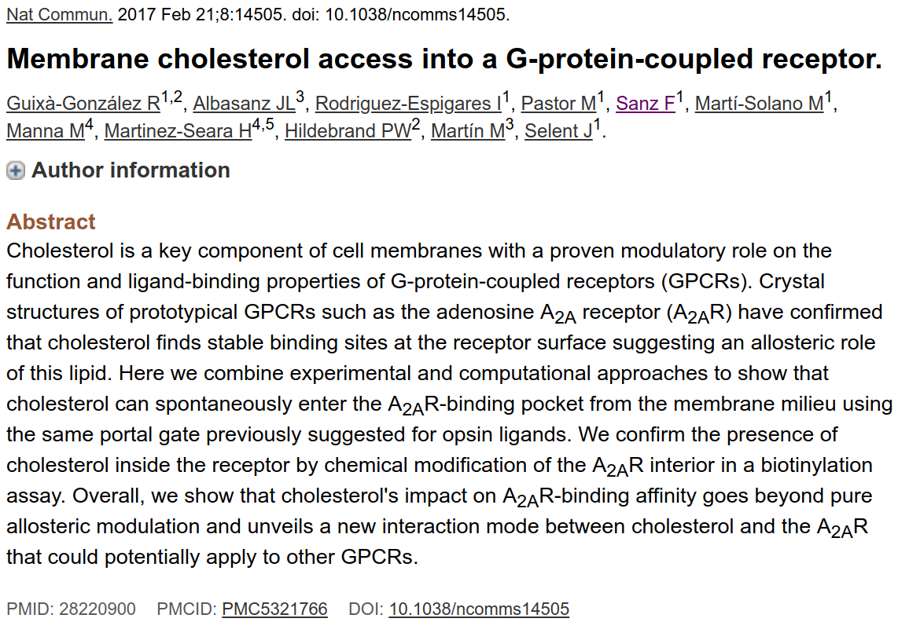

Loading...
Visual MD sharing using
NGL & MDsrv
2018-11-26
Johanna Tiemann
AG Hildebrand − University Leipzig
SHARING - why should I care?
Goal of science: explain, predict & apply
scientist interpret, exchange, discuss, reuse & get credit
scientists want to share & exchange

www.wikicsr.it
What's the current standard?
Problem of MD: data-intensive science
|
Text ⇓ 
|
Figures ⇓  |
Video ⇓ |
|---|
Journals, Conferences, Social Media
recently: distribution of "raw data"
What's out there?
Scientific data sharing resources:
- e.g. OSF, FigShare, Zenodo, Dataverse, Dryad, Mendeley Data, DataHube
- open, free, easy usable
- few restrictions, no requirements
- Problem: no attempt to integrate / harmonize data
→ more about this later
Visualization resources:
- VMD streamlining
- MDsrv, HTMoL
Why focus on visualization?
One Look is Worth A Thousand Words!
Problems of sharing visualization
- large file size & different formats
- specialized software & setups
→ limits audience
WebGL: standard built directly into web browser without requiring installation of plugins
MDsrv, HTMoL
MDsrv

Implementation

(A) Server component:
WSGI compliant web server (utilizing Python & Flask) handles static server, trajectory files and ensures basic access control
Implementation
(B) Trajectory serving:
Provides access to vast amounts of trajectory formats by using function derived from SimpleTraj, MDTraj & MDAnalysis
Implementation
(C) Visualization via NGL:
JavaScript written, GUI / embedded viewer reads, processes & updates structures & representations and renders on GPU using WebGL.
Some examples
Limitations & how to overcome them
MDsrv reaches towards each single researcher
What simulations should be uploaded?
see the bigger picture
Problems by current sharing culture
- moving away from centralization
- becoming more diverse
- less integrated
- problematic for re-usability
FAIR principles
→ GPCRmd
“All knowledge is connected to all other knowledge. The fun is in making the connections.” Arthur C. Aufderheide (1922 - 2013, paleopathologist)
Thank you!
Peter Hildebrand (University Leipzig & Charité Berlin)
Ramon Guixà-Gonzáles (Charité Berlin & Universitat Autònoma de Barcelona)
Alex Rose (UC San Diego)